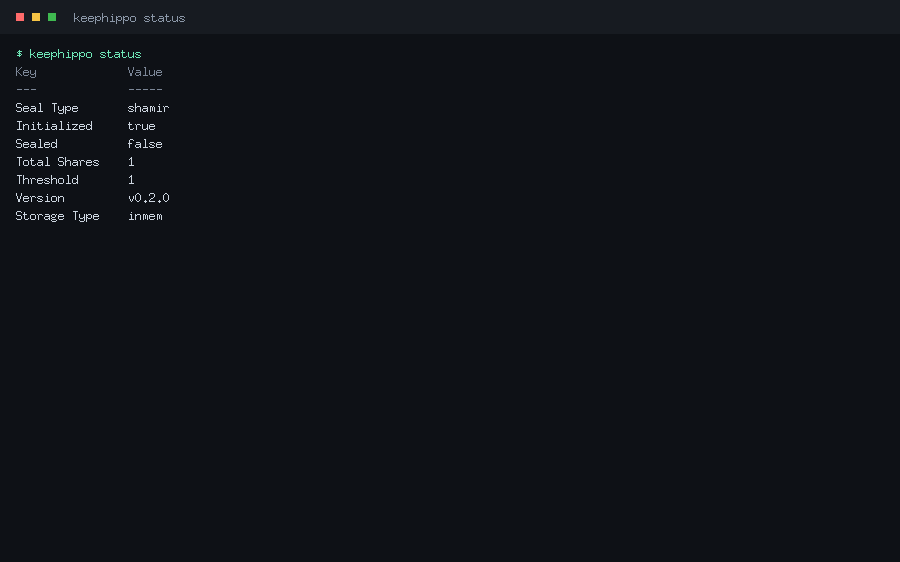

Quick start
Build the binary and start a throwaway dev server (in-memory, auto-unsealed — never for production):
$ make build
$ ./build/keephippo server --dev
==> keephippo server (dev mode) — in-memory, auto-unsealed, TLS disabled
Unseal Key: def0a1fb…
Root Token: kh.GhO9k0O9…
export KEEPHIPPO_ADDR=http://127.0.0.1:8200
export KEEPHIPPO_TOKEN=kh.GhO9k0O9…
Web console: http://127.0.0.1:8200/ui
Listening on http://127.0.0.1:8200
In another terminal, export the two variables it printed, then check status, enable a KV engine, and write and read a secret:
$ export KEEPHIPPO_ADDR=http://127.0.0.1:8200 KEEPHIPPO_TOKEN=kh.GhO9k0O9…
$ keephippo secrets enable -path=secret kv
Success! Enabled the kv secrets engine at: secret/
$ keephippo kv put secret/myapp/db username=admin password=s3cr3t
Success! Data written to: secret/myapp/db
$ keephippo kv get secret/myapp/db
Key Value
--- -----
password s3cr3t
username admin
